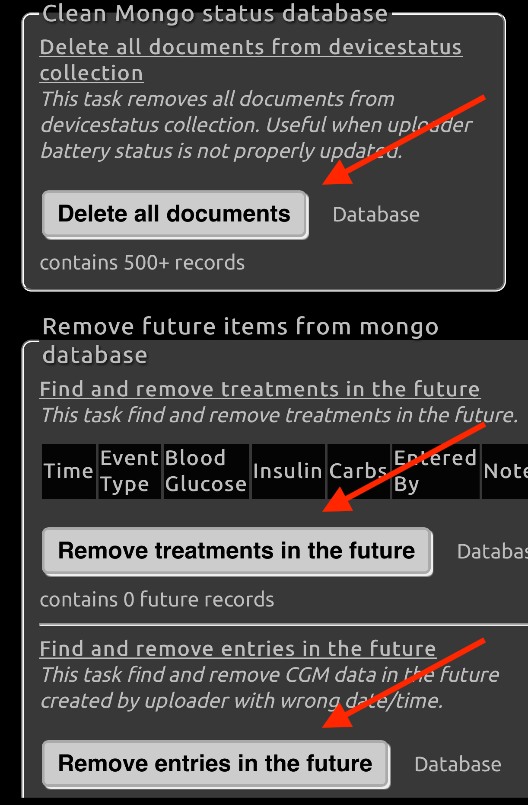
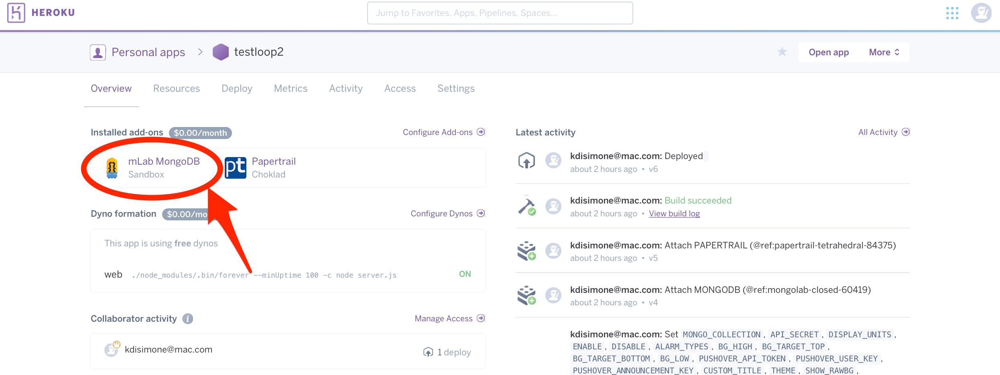
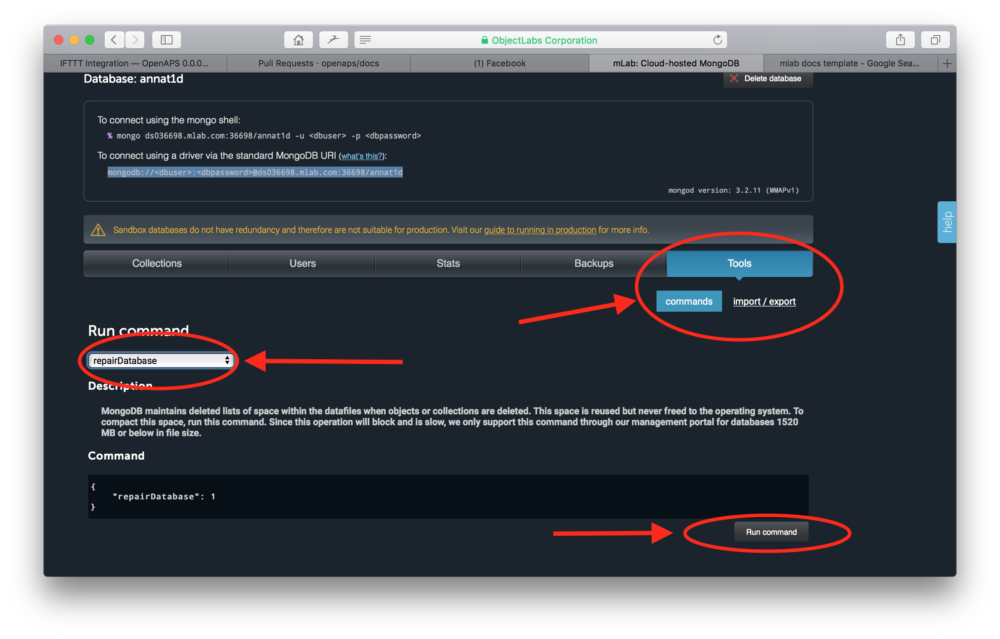

Nightscout Issues⌁
The free Nightscout we use also depends on a free database from mLab. The free database only has so much room...500 MB to be specific. After a period of time (it will vary, but usually on the order of months), your mLab database could reach its free limits. When that happens, your NS site may stop showing data properly. For example, you may notice your Share Bridge will not pull data and your site will be “stale”.
The good news? Loop can still run just fine until you repair your mLab database. The bad news? You just won’t be able to remotely monitor Loop through NS until you clear up some storage space in mLab.
These steps WILL BE NEEDED BY EVERYONE AT SOME POINT IN TIME...so please don't ignore these troubleshooting steps. If you see anything suddenly strange about your NS site after it had been working fine, start with these steps below.
mLab Cleanup⌁
There are two steps to getting your Nightscout site running again. You will need to do both steps. The first step clears out some space in your database. The second step consolidates the remaining data into a more compact space, and therefore makes the data take up less room overall in your database. You need to do both steps to help keep your NS humming along.
If you'd like a video demonstration of the steps needed to do this...here ya go. The video uses just a slightly different way to do Step 1...either way is totally fine. Click the image or click this Nightscout Cleanup link...you'll end up at the same place.
Step 1: Delete Data⌁
Go to your Nightscout site's settings (the three horizontal bars in the upper right of your Nightscout site) and open your Admin Tools for the site. Click on the buttons to "Delete all documents" in your Clean Mongo status database section of the Admin Tools. For good measure, also click on the buttons for removing future items as well.

Step 2: Repair Database⌁
Now that you cleared out some database space, we can now make the database more efficient by "repairing" the database.
To begin the repair process, click on the mlab link in your Heroku site control panel.

Then click on the Tools tab in the screen that opens. Click on the commands button and then select the repairDatabase from the dropdown menu of available commands. At the bottom of the screen, select the Run Command button.

After a short time, you should get a return message of "ok" at the bottom of the command menu box. If you failed to clear out your Mongo status database before running this command, you will likely not get a successful repair and instead your pointer wheel will just keep spinning. Make sure you first clean out the database section as described above with your Nightscout Admin Tools.
You can verify that your database housekeeping was successful by returning to your NS site and waiting for the next Loop upload. You should see all your information back in with the next Loop run.